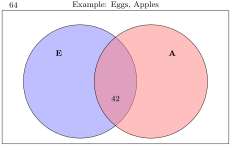
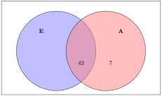
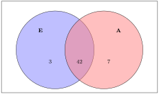
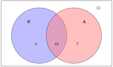
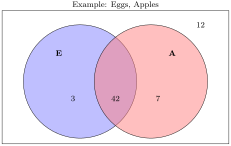

Reading Questions 1.4 Reading Questions
1. How many believe eggs are superior or believe that apples are best? 2. How many believe neither of these things?
Solution - what’s the html division here? block?
To answer a question about cardinality of “Eggs or Apples”, we are looking for n(E or A). The four regions on this two circle Venn diagram are labeled with roman numerals.
First we will use a Venn diagram to organize the information. Let E represent the set of those who believe eggs are the superior fruit. Let A represent the set of those who believe apples are best. The universe (U) in this case is the set of 64 people who were surveyed.

The 42 who believe both will be in the football shaped intersection of E and A. We will label this region with it’s cardinality. In set notation we would say \(n(E\text{ and }A) = 42\text{.}\)

49 believe that apples are the best. This means n(A) = 49. We already labeled E and A to indicate n(E and A) = 42. Therefore, the right hand crescent shape of circle A will need to have 7 elements, to make a total of 49 elements in circle A.

45 believe that eggs are the superior fruit. Since n(E and A) = 42 and n(E) = 45, We can deduce that the left hand crescent shape inside category E has 3 elements

Now that we have the cardinalities inside the categories labeled, we will label the portion of the diagram outside the circles. 64 people were surveyed. 64 - 3 - 42 - 7 = 12 Therefore we label the portion outside the circles with 12.

Now our Venn Diagram is complete, and we are ready to answer any questions concerning this population. How many believe eggs are the superior fruit or believe that apples are best? This is asking for the cardinality of E or A, n(E or A). We will include elements from any region in either E or A or both. The Venn diagram shows that the answer is 3 + 42 + 7 = 52
How many believe neither of these things? This is asking us for the cardinality outside of categories E and A. The Venn diagram shows that the answer is 12.